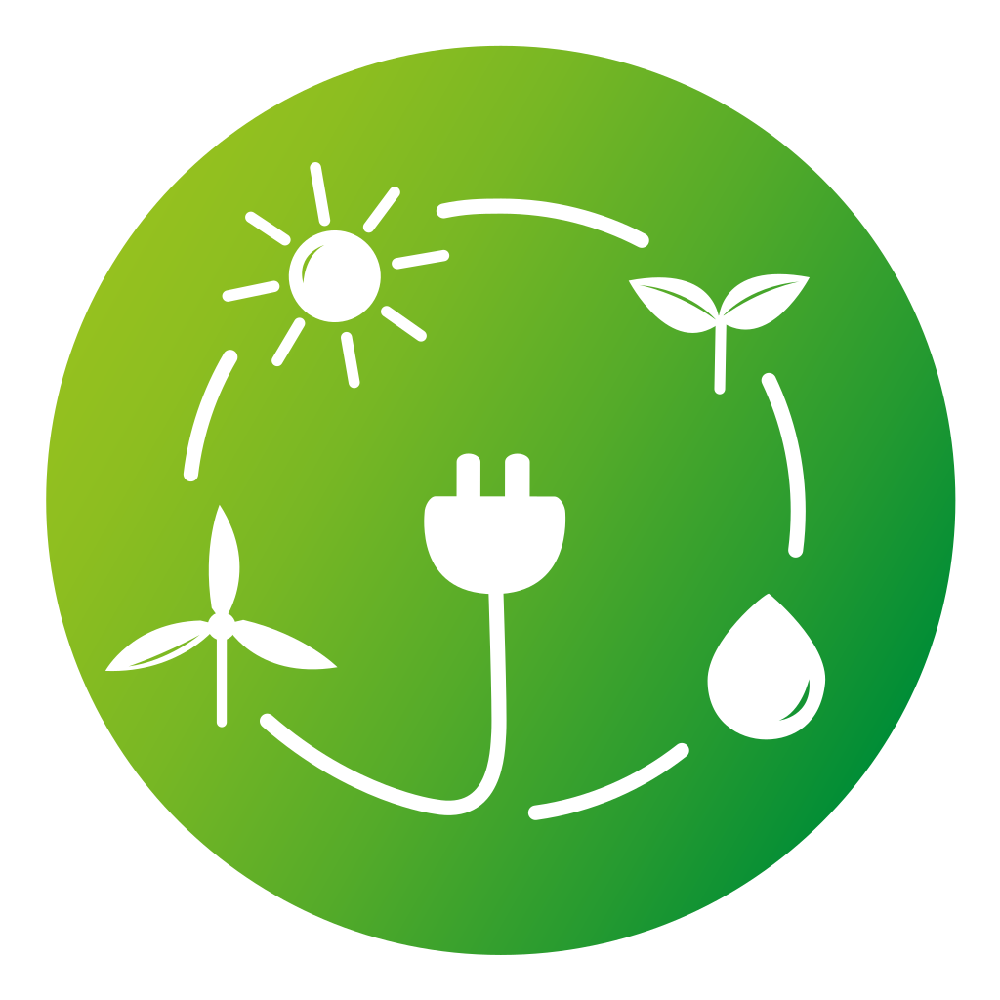
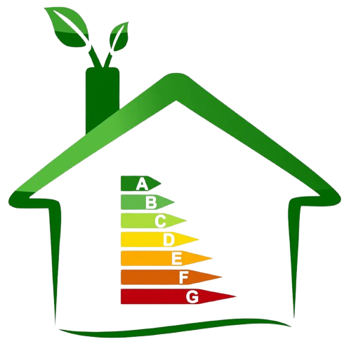
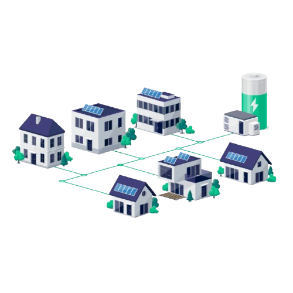
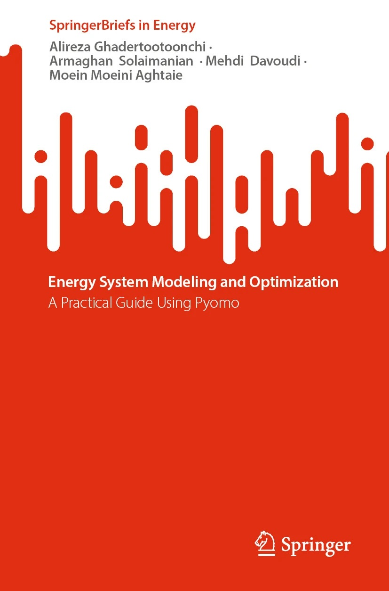
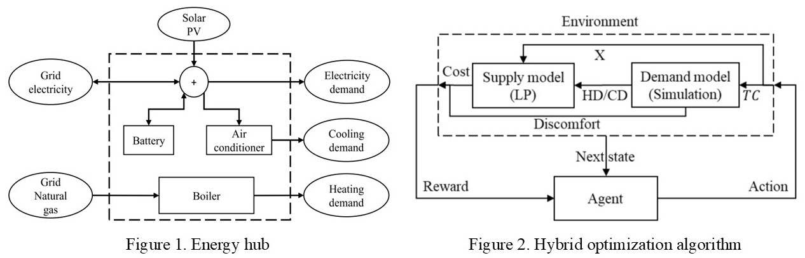
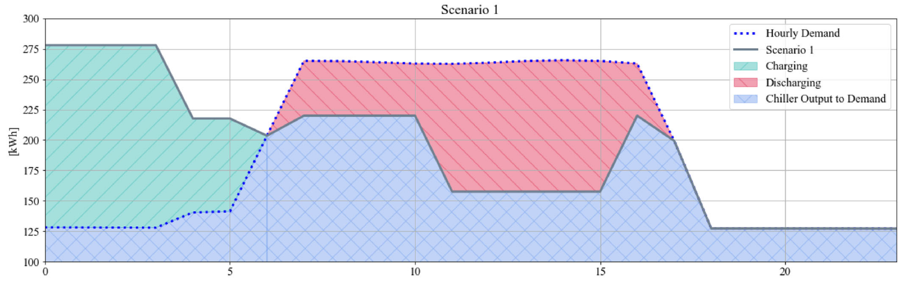
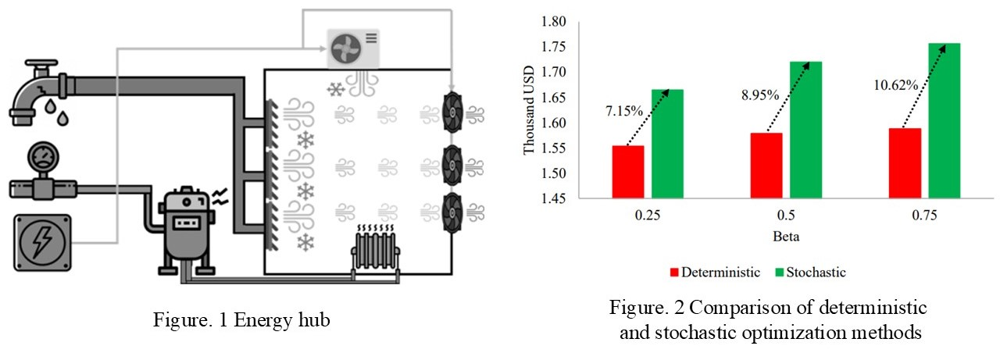
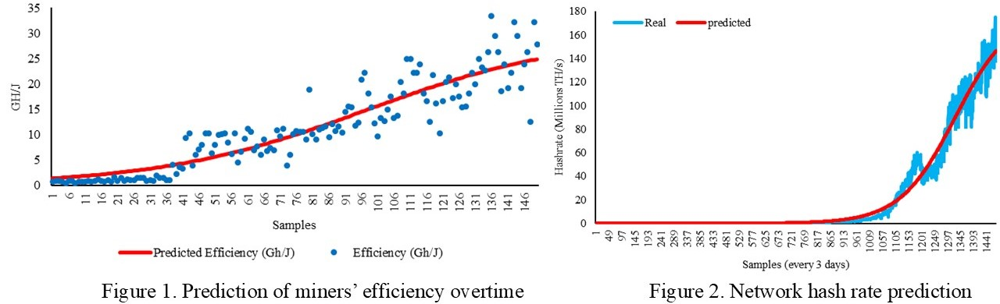
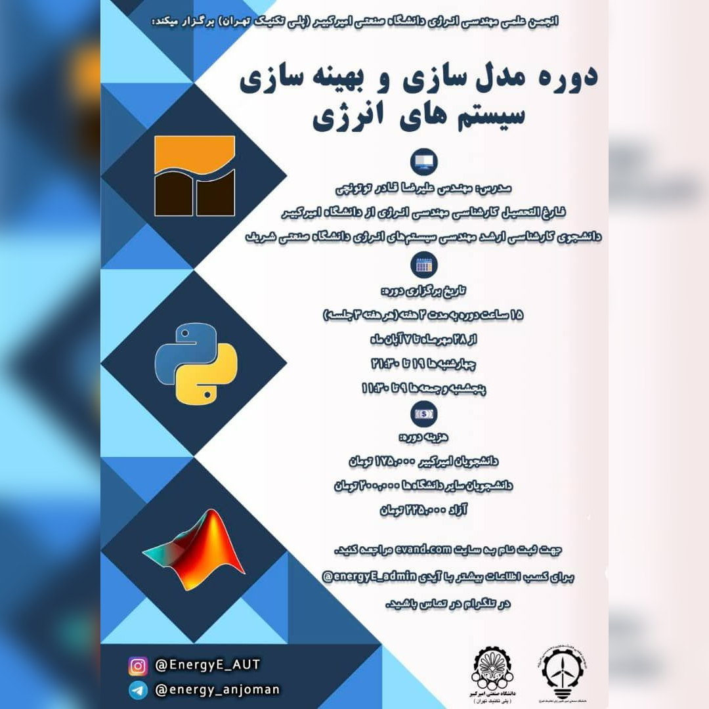

Alireza Ghadertootoonchi
I leverage data-driven decision-making and optimization techniques to foster sustainability and improve energy efficiency.
Expertise
Core areas of knowledge and research.
Programming
Optimization Algorithms

Renewable Integration

Building Energy Performance
Data-driven Decision-Making

Multicarrier Energy Systems
Academic Background
Please visit my resume for full details.
Current Research
At the Intelligent and Interactive Building (IIB) Lab, University of Toronto.
- Building cooling demand prediction using data-driven methods
- Developing a digital twinning framework for vapor compression chillers and heat pumps
Publications & Research

Published by: Springer-Nature
This guide is all about using the Pyomo optimization package in Python to solve energy system challenges. It breaks down the basics of energy systems and shows how to apply Pyomo to optimize them, focusing on both cost and environmental benefits. You'll learn about different energy technologies like power plants, renewable energy, and storage systems, along with practical coding examples. The book includes a step-by-step case study to help you apply what you've learned. It's perfect for professionals, researchers, and students with some Python and math skills, looking to make energy systems more efficient and sustainable.
Utilized skills: Python programming, Optimization, Renewable energy integration, Multicarrier energy systems
The Python code and an Excel file used as the user interface are available on GitHub.
You can find the book here.

Published by: IEEE Transactions on Smart Grid
Reinforcement learning (RL) is a subset of artificial intelligence in which a decision-making agent tries to act optimally in an environment by controlling different parameters. There is no need to identify and mathematically formulate the environmental constraints in such a method. Moreover, the RL agent does not need prior information about future outcomes to act optimally in the current situation. However, its performance is adversely affected by the environmental complexity, which increases the agent's effort to choose the optimal action in a particular condition. Integrating RL and linear programming (LP) methods is beneficial to tackle this problem as it reduces the state-action space that the agent should learn. In this regard, the optimization variables are divided into two categories. First, experience-dependent variables which have an inter-time dependency, and their values depend on the agent's decision. Second, experience-independent variables whose values depend on the LP model and have no inter-time connection. The numerical results of integrating mentioned methods have demonstrated the hybrid model's effectiveness in converging to the global optimum with more than 95% accuracy.
Utilized skills: Python programming, Optimization, Renewable energy integration, Building energy performance, Data-driven decision making, Multicarrier energy systems
You can find the paper here.

Published by: IET
Cryptocurrencies are either mineable or non-mineable. Bitcoin, the most popular mineable one, uses a process called Proof of Work (PoW) to keep its network secure. Mining Bitcoin requires special devices called ASICs that use a lot of electricity and produce heat. These devices need to stay cool, so mining sites need good cooling systems to keep them running efficiently. This study looks at how to cut down on the high energy costs of cooling in mining sites by improving the use of chillers and ice thermal storage (ITS) systems. The results show that using ITS can lower operational costs by 10% and provide extra cooling during peak hours. As electricity prices rise during peak times, the ITS system becomes even more useful in saving money.
Utilized skills: Python programming, Optimization, Building energy performance
You can find the paper here.

Published by: IEEE
With the growth in the population, the demand for food and agricultural products is increasing. Greenhouses are a promising option to meet such a growing demand as they can provide a controlled environment for the plant to grow. As a result, their performance highly depends on energy consumption. One of the main factors that affect the energy demand of a greenhouse is the weather. This study aims to investigate the effects of weather uncertainty on the planning and scheduling of a greenhouse energy system. To achieve this purpose, a two-objective (cost and temperature stability) stochastic linear model is developed and solved using historical data for the past 20 years of Tehran. The findings reveal that the deterministic approach underestimates the capital and operational costs of the system by more than 700${\$}$ during the lifetime of the greenhouse (20 years), and the underestimation rises with a growth in the importance of temperature stability.
Utilized skills: Programming, Optimization, Building energy performance, Multicarrier energy systems
You can find the paper here.

Published by: IEEE
Bitcoin's (BTC) mining process utilizes the proof of work (PoW) concept as the consensus algorithm, which consumes electricity. As a result, there are concerns regarding its sustainability and carbon emission. If one wants to estimate these, they first should have an estimation of the network's energy consumption which is hard to calculate due to its decentralized nature. To do so, two methods are conceivable. First, considering electricity price and miner's revenue (electricity costs are considered as a part of total revenue, then divided by electricity price to obtain electricity consumption); second, using hash rate along with the efficiency of mining devices. The latter is utilized in this study for short- and long-term predictions. In the short-term, recurrent neural network (RNN) is used, whereas in the long-term logistic functions are applied. It has been concluded that the ultimate energy consumption of the Bitcoin network, which will happen around 2025, is in the range of 40.4 to 73.41 TWh annually and its estimated value is 58.56 TWh.
Utilized skills: Programming, Data-driven decision making
You can find the paper here.
- The effect of energy subsidies on the sustainability of economy, society and environment: a case study of Iran [Link]
Skills: Energy system analysis, Data-driven decision-making - Optimum planning and scheduling of a greenhouse water-energy hub in different climate conditions of Iran [Link]
Skills: Programming, Optimization, Building energy performance - Implementing 2-phase SIMPLEX algorithm from scratch using the matrix form in MATLAB
Skills: Programming, Optimization - Energy and exergy simulation of Rankine and organic Rankine cycles
Skills: Programming, Energy system analysis, Thermodynamic modeling - Calibrating EnergyPlus model of a commercial building using historical data and Bayesian optimization
Skills: Python Programming, Optimization, Building energy performance, Data-driven analysis
Blog
Select an article to read more.

Webinars

Python's Pyomo library for energy system optimization problems
Fundamentals of blockchain technology and its applications in the energy sector
Finding PhD opportunities in North America